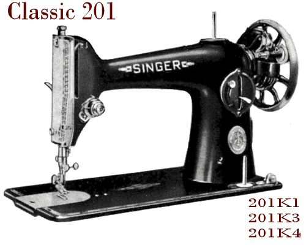
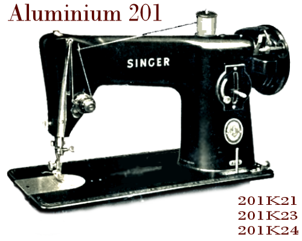
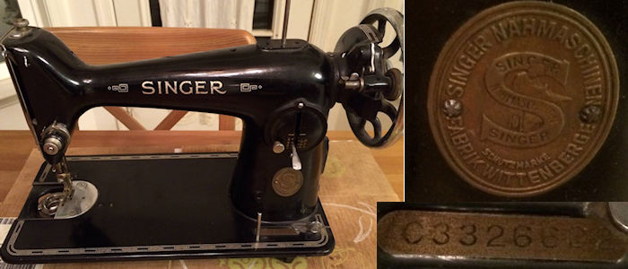
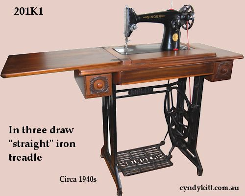
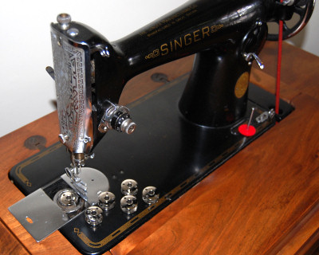
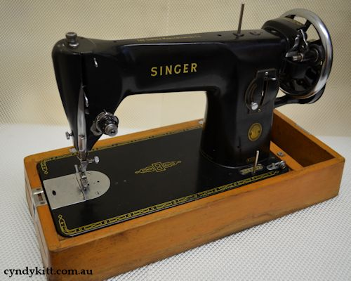
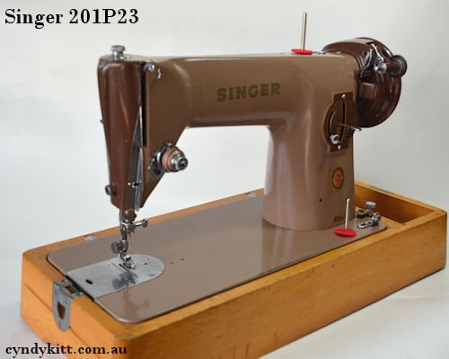

HISTORICAL NOTES ON THE SINGER 201 CLASS
The 201 was developed at Singer’s Wittenberge factory in the 1920s as the 201D. The 201–1 treadle went into production at Singer’s main plant at Elizabethport in NJ USA around 1930, however the most popular submodel was the 201–2 with a direct drive potted motor. Almost no belt drive 201–3 or hand crank 201–4 were produced for the North American market. North Americans are usually only familiar with the 201–2 so please keep that in mind when researching your machine.
The body was remodelled in cast in aluminium and designated; 201K21 treadle, 201K23 belt drive motor, 201K24 hand crank. The body shape of the aluminium machines are slightly different but this does not affect their function. There is no record of a potted motor aluminium submodel being manufactured, but if it was it would have the designation “22”.
201D
The original 201 developed and manufactured in the Wittenberge Singer Factory (Prussia, Germany) The "D" stands for Duitsland (German for Germany) as Singer had already designated "W" to the former Wheeler and Wilson factory.
The 201D is relatively rare outside of Europe, if you find one in Australia it will because it came with a post WW2 migrant.
Serial No. of all Wittenberge Singer machines begin with a C. Very little is known about Wittenberge machines as the records did not survive WW2.

Photos of a 201D head circa 1929 supplied by a collector friend in the USA
201–1 Treadle
201–2 Potted motor
201–3 Belt drive motor
201–4 Hand crank
Going into production at Singer's Elizabethport factory around 1930. Though many people still believe the model was developed in the USA, since the 201D production predates the first 201–1, that belief is highly problematic.
However, it is likely that the 201–2 submodel with the potted motor was developed at Elizabethport. While the 201–1 head was the same as the 201–3 and 201–4, the only difference being the solid balance wheel with a large pulley on the 201–3 for the belt drive motor, the direct drive potted motor 201–2 head was used a different casting mould. The Elizabethport 201 was never officially imported to Australia, however some people have imported 201–2 privately.
201K1 Treadle
201K2 Potted motor
201K3 Belt drive motor
201K4 Hand crank
The 201 class went into production at the Kilbowie factory (Scotland Great Britain) in 1935.The same year King George V celebrated the Silver Jubilee of his reign, so Singer took the opportunity to advertise the 201K as the Jubilee model. The 201K1 (and 201K2, 201K3 and 201K4) was manufactured at Kilbowie till the late '50s. Only small numbers of the 201K2 were manufactured. It is unlikely that the direct drive potted motor was ever officially marketed in Australia.
The potted motor 201K2 was the model used in the film "The Dressmaker", but as the Classic 201 weighs over 20kg it is highly unsafe to carry by the lid's handle. If you don't want to risk breaking a toe, always carry a vintage machine from under the box.

201K21 Treadle
201K23 Belt drive motor
201K24 Hand crank
In the early 1950s the body was remodelled in cast in aluminium and designated; 201K21 treadle, 201K23 belt drive motor, 201K24 hand crank. The body shape of the aluminium machines are slightly different but this does not affect their function. There is no record of a potted motor aluminium submodel being manufactured, but if it was it would have the designation “22”. There is also no record of a US made "aluminum" 201.

201P21 Treadle
201P23 Belt drive motor
201P24 Hand crank
Singer opened a factory in Penrith in 1959 where they initially finished off 201K23 as 201P, these have a serial number with a double letter E– prefix. 201P with a serial with a double letter V– prefix were cast in the Penrith factory, unfortunately the records for the Penrith Singer factory were not kept.

Take care when buying from sellers who are not also clollectors as not all #172222 bobbins are equal


Click here for current bobbin prices


Most 201 and 15 class machines use the same throat plate. Unfortunately I have not found a wholesale supplier of new 201 class slide plates, although there are a few US retailers.

Click here for current slide plate prices


201 class machines use low shank feet
Click here for current low shank feet prices and range

A bent or rusty check spring will affect how well your machine stitches
Click here for current check spring prices


Self service advice on the Singer 201 tension assembly breakdown